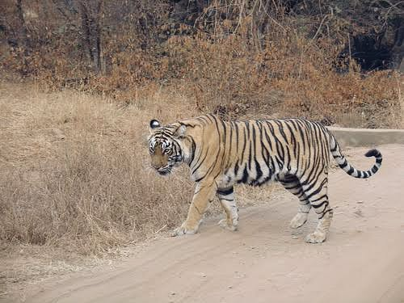

Commish: A damn capable squirrel we've found.
Cam: He deserves a medal.
Sidney: More importantly, we should celebrate! The Bellerophon survived! Drinks on me!
Commish: Calm down, Sidney, it still isn't over. The ship has only gotten halfway to its destination. There are still tons of problems only an engineer can solve. It'd be a miracle if this squirrel has another trick up its sleeve.
Sidney: I have hope. Little Squirrely's future is bright. Maybe we can start an ad campaign using some of those government checks we've gotten? #SquirrelyLives? #SquirrelySaveHumanity?
Commish: Don't be an idiot. We need to start prepping a recovery mission for the ship if things go haywire. I've already radio'd the engineering team and they're making a similar craft. One that doesn't have the trajectory glitch…
Sidney: …
Sidney: Don't look at me. This is a team effort, all of it! If one fails, it's all of us that failed.
Commish: I cannot believe you got this high in the chain with that attitude.
Commish: Cam? You haven't spoken much. Are you ready for the board presentation later? Because of your quick thinking, you brought this squirrel up to the challenge. Probably tons to talk about with them.
Cam: I-.
Cam: I'm sorry. I'm just a little shaken up about the squirrel.
Sidney: What about it? You've saved the Package! That's all that matters now.
Commish: Let him talk, Sidney.
Cam: The script you gave me leaves him in the dark about almost everything. All he knows is that he's a squirrel in space with the knowledge of human concepts. He has no destination in mind and no one to talk to.
Commish: You're talking about the S.Q.U.I.R.E. program, huh?
Cam: The one that gives an animal way too much autonomy without a few days to process it, yes.
Commish: It's still experimental, Cam. Tons of animals have also received the treatment on Earth but none have performed as well as 104. We cannot release him or addle him while he can still perform complex actions. Have you heard about Lalo the Tiger?
Sidney: Oh, mon dieu. Please! Don't explain it again.

Commish: Lalo the Tiger lived in India about three years ago. He was already clearly an intelligent being before he underwent the program. In those days, it was a test serum that was being leased out to paying countries in hopes of seeing the effects on all species across Earth. Lalo was one of those chosen animals. He already knew how to balance on a ball. Already knew basic spoken commands. Was a cute fellow too. He was given a neural chip as well for communication. Then, they administered the treatment through three separate intervals - to test his reactions.
LALO PHASE 1
BEHAVIOR: CALM, EXCITABLE
SKILLS: BALANCING, RETRIEVAL, BASIC COMMANDS
Commish: The first phase was normal. He could still do his normal commands. They only started noticing large differences a few hours after awaking. He was able to read signs, order dinner from a restaurant, and do basic times-tables. Later that same night, they even had him learn calculus by which he was incredibly adept at. The only worry came when he was recalling events from his childhood. Hunting prey. It was found he even ate a deceased woman when his baby fangs chipped. All things are in the past, right?
LALO PHASE 2
BEHAVIOR: RESTFUL, SARCASTIC, APATHETIC
SKILLS: CALCULUS, HIGHER-ORDER ORGANIZATION, PHILOSOPHY
Cam: Hah. He became a human.
Commish: He was in all but physical form. He spoke eight languages and learned three-times as fast as humans. The serum was claimed to be successful. He could philosophize like Nietzsche, solve integrals like upper-class college students, and debate all of this while picking his claws. It was said that the Indian government was already debating on changing all of their workers to rely on animals instead. With the S.Q.U.I.R.E. serum, humans were being outclassed.
Cam: So 104 should be on his way to manning the ship himself, no?
Sidney: Wait till you hear the next part.
Commish: Let me finish, children. Lalo continued to have these animal dreams. He wrote them out in a novel, published across bookstores and even found on the New York Times bestseller list, "The Pupil of the Tiger". It was a critically-acclaimed hit, surely you heard of it?
Cam: Of course, George R.R. Martin listed it as an inspiration for his writing.
Commish: Yeah, if you read it, it's a three-hundred page dissertation on the death of a tiger and the birth of an intellectual. Lalo was asserting himself as another creature, one outside of his primal urges. He went on talks with podcasters and spoke at length about the growing dangers of the world. Climate change. Endless wars. Death of the rainforests. You can call Lalo a circus trick but his mind was in the right place. Meanwhile, Lalo's reality was starting to crumble. He thought himself to have human hands and human sensibilities. The human friends he hung around would routinely leave with deep gashes and cuts from Lalo's near-manic mannerisms and playfulness. He thought he could play as humans do.
LALO PHASE 3
BEHAVIOR: VIOLENT, CONTEMPLATIVE, BIPOLAR
SKILLS: LISTENING, RESPONDING
Cam: The trials crippled him.
Commish: The trials were always going to cripple him. We have other data. Hundreds of other animals that went on a variety of differing levels of treatment.
Commish: Lalo's last moment of clarity came when he was wandering with a human friend around the coast of Goa. He told this friend that he was 'experiencing' memories of him chasing a butterfly as a kitten. Unable to reconcile reality with the new level of consciousness he was given, he spiraled into madness. This final trial made him agitated to the point that on the night before Christmas that year, he chased a scientist throughout his facility and killed her. She was pregnant.
Cam: …
Commish: Do you see the danger and insanity of bestowing this on an animal? Some creatures were meant to live in their natural state, not pushed to the edge and flushed with the strange obscurities of human existence. When they grapple with these things, they cannot approach it with a human's brain chemistry. They approach it with their predator-prey instincts and end up forcing two realities in which they belong to neither of them.
Cam: 104 could be different. I only gave him 10cc of the S.Q.U.I.R.E. vial through Zeta. Zeta is capable of monitoring him.
Commish: But we don't know when the animal begins passing into insanity. Putting it in the hands of a command board is something we can never entrust it to again. Especially when humanity's hope is lying on that ship still.
Cam: Here's what. I'll keep talking to 104. I'll let him process these thoughts and we can see how much mileage we'll glean from him. How long did it take for Lalo to break?
Commish: Four months.
Cam: But 104 had less… so we can say about a year when he's had a third of Lalo's treatment.
Commish: Please tell me you're still presenting later.
Cam: I leave it up to our star worker, Sidney. I want to restore the comms on the ship and keep guiding 104.
Sidney: Merde.
Commish: Damnit. Alright, please, PLEASE brief Sidney appropriately. He's a coder and only done online interviews.
Sidney: Hey Cam, how long until you think Commish will get fired for her rude conduct? I give it… four months.
Commish: Shut it.